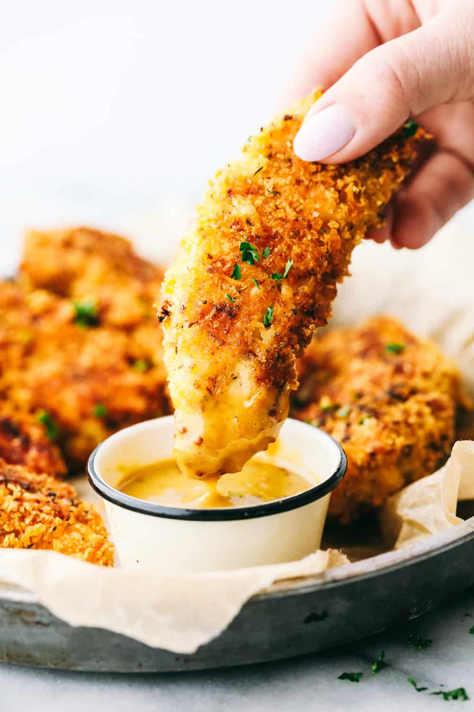

Chicken Tenders

Description
You can make anything more delicious, even an all-time family favorite with these easy-to-make-easier-to-finish
oven-fried chicken tenders. They're the perfect recipe to put together in no time! The not-so-secret secret
ingredients for these homemade chicken tenders are panko bread crumbs, Gold Medal™ flour, and yes, a whole lot of
love.
Ingredients
- 1/4 cup Gold Medal™ all-purpose flour
- 1 egg
- 1 tablespoon water
- 1 cup Progresso™ plain or Italian style panko crispy bread crumbs
- 1/2 cup grated Parmesan cheese
- 1 1/4 lb (20 oz) chicken breast tenders (from two 14-oz packages)
Favorite dipping sauce, if desired
Steps
- Heat oven to 425°F. Line cookie sheet with foil; spray with cooking spray.
-
In shallow dish, place flour. In another shallow dish, beat egg and water. In third shallow dish, mix bread crumbs
and cheese. Coat chicken with flour; dip into egg mixture, then coat with bread crumb mixture. Place on cookie
sheet.
- Bake 15 to 20 minutes, turning once, until chicken is no longer pink in center and coating is golden brown.
Serve with dipping sauce.
Recipe credits to Betty
Crocker